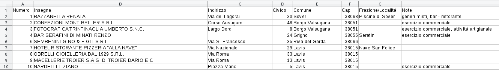

Data formats solutions¶
Introduction¶
Here we review how to load and write tabular data such as CSV, tree-like data such as JSON files, and how to fetch it from the web with webapis.
Graph formats are treated in a separate notebook.
In this tutorial we will talk about data formats
textual files
line-based files
CSV
opendata catalogs
license mention (creative commons, ..)
In a separate notebook we will discuss graph formats
What to do¶
unzip exercises in a folder, you should get something like this:
-jupman.py
-exercises
|- matrices
|- formats.ipynb
|- formats-sol.ipynb
WARNING: to correctly visualize the notebook, it MUST be in an unzipped folder !
open Jupyter Notebook from that folder. Two things should open, first a console and then browser. The browser should show a file list: navigate the list and open the notebook
matrix-networks/matrix-networks.ipynbGo on reading that notebook, and follow instuctions inside.
Shortcut keys:
to execute Python code inside a Jupyter cell, press
Control + Enterto execute Python code inside a Jupyter cell AND select next cell, press
Shift + Enterto execute Python code inside a Jupyter cell AND a create a new cell aftwerwards, press
Alt + EnterIf the notebooks look stuck, try to select
Kernel -> Restart
1. line files¶
Line files are typically text files which contain information grouped by lines. An example using historical characters might be like the following:
Leonardo
da Vinci
Sandro
Botticelli
Niccolò
Macchiavelli
We can immediately see a regularity: first two lines contain data of Leonardo da Vinci, second one the name and then the surname. Successive lines instead have data of Sandro Botticelli, with again first the name and then the surname and so on.
We might want to do a program that reads the lines and prints on the terminal names and surnames like the following:
Leonardo da Vinci
Sandro Botticelli
Niccolò Macchiavelli
To start having an approximation of the final result, we can open the file, read only the first line and print it:
[1]:
with open('people-simple.txt', encoding='utf-8') as f:
line=f.readline()
print(line)
Leonardo
What happened? Let’s examing first rows:
open command¶
The command
open('people-simple.txt', encoding='utf-8')
allows us to open the text file by telling PYthon the file path 'people-simple.txt' and the encoding in which it was written (encoding='utf-8').
The encoding¶
The encoding dependes on the operating system and on the editor used to write the file. When we open a file, Python is not capable to divine the encoding, and if we do not specify anything Python might open the file assuming an encoding different from the original - in other words, if we omit the encoding (or we put a wrong one) we might end up seeing weird characters (like little squares instead of accented letters).
In general, when you open a file, try first to specify the encoding utf-8 which is the most common one. If it doesn’t work try others, for example for files written in south Europe with Windows you might check encoding='latin-1'. If you open a file written elsewhere, you might need other encodings. For more in-depth information, you can read Dive into Python - Chapter 4 - Strings, and Dive into Python - Chapter 11 -
File, both of which are extremely recommended readings.
with block¶
The with defines a block with instructions inside:
with open('people-simple.txt', encoding='utf-8') as f:
line=f.readline()
print(line)
We used the with to tell PYthon that in any case, even if errors occur, we want that after having used the file, that is after having executed the instructions inside the internal block (the line=f.readline() and print(line)) Python must automatically close the file. Properly closing a file avoids to waste memory resources and creating hard to find paranormal errors. If you want to avoid hunting for never closed zombie files, always remember to open all files in with blocks!
Furthermore, at the end of the row in the part as f: we assigned the file to a variable hereby called f, but we could have used any other name we liked.
WARNING: To indent the code, ALWAYS use sequences of four white spaces. Sequences of 2 spaces. Sequences of only 2 spaces even if allowed are not recommended.
WARNING: Depending on the editor you use, by pressing TAB you might get a sequence o f white spaces like it happens in Jupyter (4 spaces which is the recommended length), or a special tabulation character (to avoid)! As much as this annoying this distinction might appear, remember it because it might generate very hard to find errors.
WARNING: In the commands to create blocks such as with, always remember to put the character of colon : at the end of the line !
The command
line=f.readline()
puts in the variable line the entire line, like a string. Warning: the string will contain at the end the special character of line return !
You might wonder from where that readline comes from. Like everything in Python, our variable f which represents the file we just opened is an object, and like any object, depending on its type, it has particular methods we can use on it. In this case the method is readline.
The following command prints the string content:
print(line)
✪ 1.1 Exercise: Try to rewrite here the block we’ve just seen, and execute the cell by pressing Control-Enter. Rewrite the code with the fingers, not with copy-paste ! Pay attention to correct indentation with spaces in the block.
[2]:
# write here
with open('people-simple.txt', encoding='utf-8') as f:
line=f.readline()
print(line)
Leonardo
✪ 1.2 Exercise: you might wondering what exactly is that f, and what exatly the method readlines should be doing. When you find yourself in these situations, you might help yourself with functions type and help. This time, directly copy paste the same code here, but insert inside with block the commands:
print(type(f))print(help(f))print(help(f.readline))# Attention: remember the f. before the readline !!
Every time you add something, try to execute with Control+Enter and see what happens
[3]:
# write here the code (copy and paste)
with open('people-simple.txt', encoding='utf-8') as f:
line=f.readline()
print(type(f))
print(help(f.readline))
print(help(f))
print(line)
<class '_io.TextIOWrapper'>
Help on built-in function readline:
readline(size=-1, /) method of _io.TextIOWrapper instance
Read until newline or EOF.
Returns an empty string if EOF is hit immediately.
None
Help on TextIOWrapper object:
class TextIOWrapper(_TextIOBase)
| Character and line based layer over a BufferedIOBase object, buffer.
|
| encoding gives the name of the encoding that the stream will be
| decoded or encoded with. It defaults to locale.getpreferredencoding(False).
|
| errors determines the strictness of encoding and decoding (see
| help(codecs.Codec) or the documentation for codecs.register) and
| defaults to "strict".
|
| newline controls how line endings are handled. It can be None, '',
| '\n', '\r', and '\r\n'. It works as follows:
|
| * On input, if newline is None, universal newlines mode is
| enabled. Lines in the input can end in '\n', '\r', or '\r\n', and
| these are translated into '\n' before being returned to the
| caller. If it is '', universal newline mode is enabled, but line
| endings are returned to the caller untranslated. If it has any of
| the other legal values, input lines are only terminated by the given
| string, and the line ending is returned to the caller untranslated.
|
| * On output, if newline is None, any '\n' characters written are
| translated to the system default line separator, os.linesep. If
| newline is '' or '\n', no translation takes place. If newline is any
| of the other legal values, any '\n' characters written are translated
| to the given string.
|
| If line_buffering is True, a call to flush is implied when a call to
| write contains a newline character.
|
| Method resolution order:
| TextIOWrapper
| _TextIOBase
| _IOBase
| builtins.object
|
| Methods defined here:
|
| __getstate__(...)
|
| __init__(self, /, *args, **kwargs)
| Initialize self. See help(type(self)) for accurate signature.
|
| __new__(*args, **kwargs) from builtins.type
| Create and return a new object. See help(type) for accurate signature.
|
| __next__(self, /)
| Implement next(self).
|
| __repr__(self, /)
| Return repr(self).
|
| close(self, /)
| Flush and close the IO object.
|
| This method has no effect if the file is already closed.
|
| detach(self, /)
| Separate the underlying buffer from the TextIOBase and return it.
|
| After the underlying buffer has been detached, the TextIO is in an
| unusable state.
|
| fileno(self, /)
| Returns underlying file descriptor if one exists.
|
| OSError is raised if the IO object does not use a file descriptor.
|
| flush(self, /)
| Flush write buffers, if applicable.
|
| This is not implemented for read-only and non-blocking streams.
|
| isatty(self, /)
| Return whether this is an 'interactive' stream.
|
| Return False if it can't be determined.
|
| read(self, size=-1, /)
| Read at most n characters from stream.
|
| Read from underlying buffer until we have n characters or we hit EOF.
| If n is negative or omitted, read until EOF.
|
| readable(self, /)
| Return whether object was opened for reading.
|
| If False, read() will raise OSError.
|
| readline(self, size=-1, /)
| Read until newline or EOF.
|
| Returns an empty string if EOF is hit immediately.
|
| seek(self, cookie, whence=0, /)
| Change stream position.
|
| Change the stream position to the given byte offset. The offset is
| interpreted relative to the position indicated by whence. Values
| for whence are:
|
| * 0 -- start of stream (the default); offset should be zero or positive
| * 1 -- current stream position; offset may be negative
| * 2 -- end of stream; offset is usually negative
|
| Return the new absolute position.
|
| seekable(self, /)
| Return whether object supports random access.
|
| If False, seek(), tell() and truncate() will raise OSError.
| This method may need to do a test seek().
|
| tell(self, /)
| Return current stream position.
|
| truncate(self, pos=None, /)
| Truncate file to size bytes.
|
| File pointer is left unchanged. Size defaults to the current IO
| position as reported by tell(). Returns the new size.
|
| writable(self, /)
| Return whether object was opened for writing.
|
| If False, write() will raise OSError.
|
| write(self, text, /)
| Write string to stream.
| Returns the number of characters written (which is always equal to
| the length of the string).
|
| ----------------------------------------------------------------------
| Data descriptors defined here:
|
| buffer
|
| closed
|
| encoding
| Encoding of the text stream.
|
| Subclasses should override.
|
| errors
| The error setting of the decoder or encoder.
|
| Subclasses should override.
|
| line_buffering
|
| name
|
| newlines
| Line endings translated so far.
|
| Only line endings translated during reading are considered.
|
| Subclasses should override.
|
| ----------------------------------------------------------------------
| Methods inherited from _IOBase:
|
| __del__(...)
|
| __enter__(...)
|
| __exit__(...)
|
| __iter__(self, /)
| Implement iter(self).
|
| readlines(self, hint=-1, /)
| Return a list of lines from the stream.
|
| hint can be specified to control the number of lines read: no more
| lines will be read if the total size (in bytes/characters) of all
| lines so far exceeds hint.
|
| writelines(self, lines, /)
|
| ----------------------------------------------------------------------
| Data descriptors inherited from _IOBase:
|
| __dict__
None
Leonardo
First we put the content of the first line into the variable line, now we might put it in a variable witha more meaningful name, like name. Also, we can directly read the next row into the variable surname and then print the concatenation of both:
[4]:
with open('people-simple.txt', encoding='utf-8') as f:
name=f.readline()
surname=f.readline()
print(name + ' ' + surname)
Leonardo
da Vinci
PROBLEM ! The printing puts a weird carriage return. Why is that? If you remember, first we said that readline reads the line content in a string adding to the end also the special newline character. To eliminate it, you can use the command rstrip():
[5]:
with open('people-simple.txt', encoding='utf-8') as f:
name=f.readline().rstrip()
surname=f.readline().rstrip()
print(name + ' ' + surname)
Leonardo da Vinci
✪ 1.3 Exercise: Again, rewrite the block above in the cell below, ed execute the cell with Control+Enter. Question: what happens if you use strip() instead of rstrip()? What about lstrip()? Can you deduce the meaning of r and l? If you can’t manage it, try to use python command help by calling help(string.rstrip)
[6]:
# write here
with open('people-simple.txt', encoding='utf-8') as f:
name=f.readline().rstrip()
surname=f.readline().rstrip()
print(name + ' ' + surname)
Leonardo da Vinci
Very good, we have the first line ! Now we can read all the lines in sequence. To this end, we can use a while cycle:
[7]:
with open('people-simple.txt', encoding='utf-8') as f:
line=f.readline()
while line != "":
name = line.rstrip()
surname=f.readline().rstrip()
print(name + ' ' + surname)
line=f.readline()
Leonardo da Vinci
Sandro Botticelli
Niccolò Macchiavelli
NOTE: In Python there are shorter ways to read a text file line by line, we used this approach to make explicit all passages.
What did we do? First, we added a while cycle in a new block
WARNING: In new block, since it is already within the external with, the instructions are indented of 8 spaces and not 4! If you use the wrong spaces, bad things happen !
We first read a line, and two cases are possible:
we are the end of the file (or file is empty) : in this case
readline()call returns an empty stringwe are not at the end of the file: the first line is put as a string inside the variable
line. Since Python internally uses a pointer to keep track at which position we are when reading inside the file, after the read such pointer is moved at the beginning of the next line. This way the next call toreadline()will read a line from the new position.
In while block we tell Python to continue the cycle as long as line is not empty. If this is the case, inside the while block we parse the name from the line and put it in variable name (removing extra newline character with rstrip() as we did before), then we proceed reading the next line and parse the result inside the surname variable. Finally, we read again a line into the line variable so it will be ready for the next round of name extraction. If line is empty
the cycle will terminate:
while line != "": # enter cycle if line contains characters
name = line.rstrip() # parses the name
surname=f.readline().rstrip() # reads next line and parses surname
print(name + ' ' + surname)
line=f.readline() # read next line
✪ 1.4 EXERCISE: As before, rewrite in the cell below the code with the while, paying attention to the indentation (for the external with line use copy-and-paste):
[8]:
# write here the code of internal while
with open('people-simple.txt', encoding='utf-8') as f:
line=f.readline()
while line != "":
name = line.rstrip()
surname=f.readline().rstrip()
print(name + ' ' + surname)
line=f.readline()
Leonardo da Vinci
Sandro Botticelli
Niccolò Macchiavelli
people-complex line file:¶
Look at the file people-complex.txt:
name: Leonardo
surname: da Vinci
birthdate: 1452-04-15
name: Sandro
surname: Botticelli
birthdate: 1445-03-01
name: Niccolò
surname: Macchiavelli
birthdate: 1469-05-03
Supposing to read the file to print this output, how would you do it?
Leonardo da Vinci, 1452-04-15
Sandro Botticelli, 1445-03-01
Niccolò Macchiavelli, 1469-05-03
Hint 1: to obtain the string 'abcde', the substring 'cde', which starts at index 2, you can ue the operator square brackets, using the index followed by colon :
[9]:
x = 'abcde'
x[2:]
[9]:
'cde'
[10]:
x[3:]
[10]:
'de'
Hint 2: To know the length of a string, use the function len:
[11]:
len('abcde')
[11]:
5
✪ 1.5 Exercise: Write here the solution of the exercise ‘People complex’:
[12]:
# write here
with open('people-complex.txt', encoding='utf-8') as f:
line=f.readline()
while line != "":
name = line.rstrip()[len("name: "):]
surname= f.readline().rstrip()[len("surname: "):]
born = f.readline().rstrip()[len("birthdate: "):]
print(name + ' ' + surname + ', ' + born)
line=f.readline()
Leonardo da Vinci, 1452-04-15
Sandro Botticelli, 1445-03-01
Niccolò Macchiavelli, 1469-05-03
Exercise: line file immersione-in-python-toc¶
✪✪✪ This exercise is more challenging, if you are a beginner you might skip it and go on to CSVs
The book Dive into Python is nice and for the italian version there is a PDF, which has a problem though: if you try to print it, you will discover that the index is missing. Without despairing, we found a program to extract titles in a file as follows, but you will discover it is not exactly nice to see. Since we are Python ninjas, we decided to transform raw titles in a real table of contents. Sure enough there are smarter ways to do this, like loading the pdf in Python with an appropriate module for pdfs, still this makes for an interesting exercise.
You are given the file immersione-in-python-toc.txt:
BookmarkBegin
BookmarkTitle: Il vostro primo programma Python
BookmarkLevel: 1
BookmarkPageNumber: 38
BookmarkBegin
BookmarkTitle: Immersione!
BookmarkLevel: 2
BookmarkPageNumber: 38
BookmarkBegin
BookmarkTitle: Dichiarare funzioni
BookmarkLevel: 2
BookmarkPageNumber: 41
BookmarkBeginint
BookmarkTitle: Argomenti opzionali e con nome
BookmarkLevel: 3
BookmarkPageNumber: 42
BookmarkBegin
BookmarkTitle: Scrivere codice leggibile
BookmarkLevel: 2
BookmarkPageNumber: 44
BookmarkBegin
BookmarkTitle: Stringhe di documentazione
BookmarkLevel: 3
BookmarkPageNumber: 44
BookmarkBegin
BookmarkTitle: Il percorso di ricerca di import
BookmarkLevel: 2
BookmarkPageNumber: 46
BookmarkBegin
BookmarkTitle: Ogni cosa è un oggetto
BookmarkLevel: 2
BookmarkPageNumber: 47
Write a python program to print the following output:
Il vostro primo programma Python 38
Immersione! 38
Dichiarare funzioni 41
Argomenti opzionali e con nome 42
Scrivere codice leggibile 44
Stringhe di documentazione 44
Il percorso di ricerca di import 46
Ogni cosa è un oggetto 47
For this exercise, you will need to insert in the output artificial spaces, in a qunatity determined by the rows BookmarkLevel
QUESTION: what’s that weird value è at the end of the original file? Should we report it in the output?
HINT 1: To convert a string into an integer number, use the function int:
[13]:
x = '5'
[14]:
x
[14]:
'5'
[15]:
int(x)
[15]:
5
Warning: int(x) returns a value, and never modifies the argument x!
HINT 2: To substitute a substring in a string, you can use the method .replace:
[16]:
x = 'abcde'
x.replace('cd', 'HELLO' )
[16]:
'abHELLOe'
HINT 3: while there is only one sequence to substitute, replace is fine, but if we had a milion of horrible sequences like >, >, &x3e;, what should we do? As good data cleaners, we recognize these are HTML escape sequences, so we could use methods specific to sequences like html.escape. TRy it instead of replace and check if it works!
NOTE: Before using html.unescape, import the module html with the command:
import html
HINT 4: To write n copies of a character, use * like this:
[17]:
"b" * 3
[17]:
'bbb'
[18]:
"b" * 7
[18]:
'bbbbbbb'
IMPLEMENTATION: Write here the solution for the line file immersione-in-python-toc.txt, and try execute it by pressing Control + Enter:
[19]:
# write here
import html
with open("immersione-in-python-toc.txt", encoding='utf-8') as f:
line=f.readline()
while line != "":
line = f.readline().strip()
title = html.unescape(line[len("BookmarkTitle: "):])
line=f.readline().strip()
level = int(line[len("BookmarkLevel: "):])
line=f.readline().strip()
page = line[len("BookmarkPageNumber: "):]
print((" " * level) + title + " " + page)
line=f.readline()
Il vostro primo programma Python 38
Immersione! 38
Dichiarare funzioni 41
Argomenti opzionali e con nome 42
Scrivere codice leggibile 44
Stringhe di documentazione 44
Il percorso di ricerca di import 46
Ogni cosa è un oggetto 47
2. File CSV¶
There can be various formats for tabular data, among which you surely know Excel (.xls or .xslx). Unfortunately, if you want to programmatically process data, you should better avoid them and prefer if possible the CSV format, literally ‘Comma Separated Value’. Why? Excel format is very complex and may hide several things which have nothing to do with the raw data:
formatting (bold fonts, colors …)
merged cells
formulas
multiple tabs
macros
Correctly parsing complex files may become a nightmare. Instead, CSVs are far simpler, so much so you can even open them witha simple text editor.
We will try to open some CSV, taking into consideration the possible problems we might get. CSVs are not necessarily the perfect solution for everything, but they offer more control over reading and typically if there are conversion problems is because we made a mistake, and not because the reader module decided on its own to exchange days with months in dates.
Why parsing a CSV ?¶
To load and process CSVs there exist many powerful and intuitive modules such as Pandas in Python or R dataframes. Yet, in this notebook we will load CSVs using the most simple method possible, that is reading row by row, mimicking the method already seen in the previous part of the tutorial. Don’t think this method is primitive or stupid, according to the situation it may save the day. How? Some files may potentially occupy huge amounts of memory, and in moder laptops as of 2019 we only have 4 gigabytes of RAM, the memory where Python stores variables. Given this, Python base functions to read files try their best to avoid loading everything in RAM. Tyipcally a file is read sequentially one piece at a time, putting in RAM only one row at a time.
QUESTION 2.1: if we want to know if a given file of 1000 terabytes contains only 3 million rows in which the word ‘ciao’ is present, are we obliged to put in RAM all of the rows ?
ANSWER: no, it is sufficient to keep in memory one row at a time, and hold the count in another variable
QUESTION 2.2: What if we wanted to take a 100 terabyte file and create another one by appending to each row of the first one the word ‘ciao’? Should we put in RAM at the same time all the rows of the first file ? What about the rows of second one?
ANSWER: No, it is enough to keep in RAM one row at a time, which is first read from the first file and then written right away in the second file.
Reading a CSV¶
We will start with artifical example CSV. Let’s look at example-1.csv which you can find in the same folder as this Jupyter notebook. It contains animals with their expected lifespan:
animal, lifespan
dog, 12
cat, 14
pelican, 30
squirrel, 6
eagle, 25
We notice right away that the CSV is more structured than files we’ve seen in the previous section
in the first line there are column names, separated with commas:
animal, lifespanfields in successive rows are also separated by commas
,:dog, 12
Let’s try now to import this file in Python:
[20]:
import csv
with open('example-1.csv', encoding='utf-8', newline='') as f:
# we create an object 'my_reader' which will take rows from the file
my_reader = csv.reader(f, delimiter=',')
# 'my_reader' is an object considered 'iterable', that is,
# if used in a 'for' will produce a sequnce of rows from csv
# NOTE: here every file row is converted into a list of Python strings !
for row in my_reader:
print('We just read a row !')
print(row) # prints variable 'row', which is a list of strings
print('') # prints an empty string, to separate in vertical
We just read a row !
['animal', ' lifespan']
We just read a row !
['dog', '12']
We just read a row !
['cat', '14']
We just read a row !
['pelican', '30']
We just read a row !
['squirrel', '6']
We just read a row !
['eagle', '25']
We immediatly notice from output that example file is being printed, but there are square parrenthesis ( [] ). What do they mean? Those we printed are lists of strings
Let’s analyze what we did:
import csv
Python natively has a module to deal with csv files, which has the intuitive csv name. With this instruction, we just loaded the module.
What happens next? As already did for files with lines before, we open the file in a with block:
with open('example-1.csv', encoding='utf-8', newline='') as f:
my_reader = csv.reader(f, delimiter=',')
for row in my_reader:
print(row)
For now ignore the newline='' and notice how first we specificed the encoding
Once the file is open, in the row
my_reader = csv.reader(f, delimiter=',')
we ask to csv module to create a reader object called my_reader for our file, telling Python that comma is the delimiter for fields.
NOTE: my_reader is the name of the variable we are creating, it could be any name.
This reader object can be exploited as a sort of generator of rows by using a for cycle:
for row in my_reader:
print(row)
In for cycle we employ lettore to iterate in the reading of the file, producing at each iteration a row we call row (but it could be any name we like). At each iteration, the variable row gets printed.
If you look closely the prints of first lists, you will see that each time to each row is assigned only one Python list. The list contains as many elements as the number of fields in the CSV.
✪ EXERCISE 2.3: Rewrite in the cell below the instructions to read and print the CSV, paying attention to indentation:
[21]:
import csv
with open('example-1.csv', encoding='utf-8', newline='') as f:
# we create an object 'my_reader' which will take rows from the file
my_reader = csv.reader(f, delimiter=',')
# 'my_reader' is an object considered 'iterable', that is,
# if used in a 'for' will produce a sequnce of rows from csv
# NOTE: here every file row is converted into a list of Python strings !
for row in my_reader:
print("We just read a row !")
print(row) # prints variable 'row', which is a list of strings
print('') # prints an empty string, to separate in vertical
We just read a row !
['animal', ' lifespan']
We just read a row !
['dog', '12']
We just read a row !
['cat', '14']
We just read a row !
['pelican', '30']
We just read a row !
['squirrel', '6']
We just read a row !
['eagle', '25']
✪✪ Exercise 2.4: try to put into big_list a list containing all the rows extracted from the file, which will be a list of lists like so:
[['eagle', 'lifespan'],
['dog', '12'],
['cat', '14'],
['pelican', '30'],
['squirrel', '6'],
['eagle', '25']]
HINT: Try creating an empty list and then adding elements with .append method
[22]:
# write here
import csv
with open('example-1.csv', encoding='utf-8', newline='') as f:
# we create an object 'my_reader' which will take rows from the file
my_reader = csv.reader(f, delimiter=',')
# 'my_reader' is an object considered 'iterable', that is,
# if used in a 'for' will produce a sequnce of rows from csv
# NOTE: here every file row is converted into a list of Python strings !
big_list = []
for row in my_reader:
big_list.append(row)
print(big_list)
[['animal', ' lifespan'], ['dog', '12'], ['cat', '14'], ['pelican', '30'], ['squirrel', '6'], ['eagle', '25']]
✪✪ EXERCISE 2.5: You may have noticed that numbers in lists are represented as strings like '12' (note apeces), instead that like Python integer numbers (represented without apeces), 12:
We just read a row!
['dog', '12']
So, by reading the file and using normal for cycles, try to create a new variable big_list like this, which
has only data, the row with the header is not present
numbers are represented as proper integers
[['dog', 12],
['cat', 14],
['pelican', 30],
['squirrel', 6],
['eagle', 25]]
HINT 1: to jump a row you can use the instruction next(my_reader)
HINT 2: to convert a string into an integer, you can use for example. int('25')
[23]:
# write here
import csv
with open('example-1.csv', encoding='utf-8', newline='') as f:
my_reader = csv.reader(f, delimiter=',')
big_list = []
next(my_reader)
for row in my_reader:
big_list.append([row[0], int(row[1])])
print(big_list)
[['dog', 12], ['cat', 14], ['pelican', 30], ['squirrel', 6], ['eagle', 25]]
What’s a reader ?¶
We said that my_reader generates a sequence of rows, and it is iterable. In for cycle, at every cycle we ask to read a new line, which is put into variable row. We might then ask ourselves, what happens if we directly print my_reader, without any for? Will we see a nice list or something else? Let’s try:
[24]:
import csv
with open('example-1.csv', encoding='utf-8', newline='') as f:
my_reader = csv.reader(f, delimiter=',')
print(my_reader)
<_csv.reader object at 0x7f58767de978>
This result is quite disappointing
✪ EXERCISE 2.6: you probably found yourself in the same situation when trying to print a sequence generated by a call to range(5): instead of the actual sequence you get a range object. If you want to convert the generator to a list, what should you do?
[25]:
# write here
import csv
with open('example-1.csv', encoding='utf-8', newline='') as f:
my_reader = csv.reader(f, delimiter=',')
print(list(my_reader))
[['animal', ' lifespan'], ['dog', '12'], ['cat', '14'], ['pelican', '30'], ['squirrel', '6'], ['eagle', '25']]
Consuming a file¶
Not all sequences are the same. From what you’ve seen so far, going through a file in Python looks a lot like iterating a list. Which is very handy, but you need to pay attention to some things. Given that files potentially might occupy terabytes, basic Python functions to load them avoid loading everything into memory and typically a file is read one piece at a time. But if the whole file is loaded into Python environment in one shot, what happens if we try to go through it twice inside the
same with ? What happens if we try using it outside with? To find out look at next exercises.
✪ EXERCISE 2.7: taking the solution to previous exercise, try to call print(list(my_reader)) twice, in sequence. Do you get the same output in both occasions?
[ ]:
[26]:
# write here the code
#import csv
#with open('example-1.csv', encoding='utf-8', newline='') as f:
# my_reader = csv.reader(f, delimiter=',')
# print(list(my_reader))
# print(list(my_reader))
✪ Exercise 2.8: Taking the solution from previous exercise (using only one print), try down here to move the print to the left (removing any spaces). Does it still work ?
[27]:
# write here
import csv
with open('example-1.csv', encoding='utf-8', newline='') as f:
my_reader = csv.reader(f, delimiter=',')
#print(list(my_reader)) # COMMENTED, AS IT WOULD RAISE ON ERROR OF CLOSED FILE
# We can't use commands which read the file outside the with !
✪✪ Exercise 2.9: Now that we understood which kind of beast my_reader is, try to produce this result as done before, but using a list comprehension instead of the for:
[['dog', 12],
['cat', 14],
['pelican', 30],
['squirrel', 6],
['eagle', 25]]
If you can, try also to write the whole transformation to create
big_listin one row, usinf the function itertools.islice to jump the header (for exampleitertools.islice(['A', 'B', 'C', 'D', 'E'], 2, None)first two elements and produces the sequence C D E F G - in our case the elements produced bymy_readerwould be rows)
[28]:
import csv
import itertools
with open('example-1.csv', encoding='utf-8', newline='') as f:
my_reader = csv.reader(f, delimiter=',')
# write here
big_list = [[row[0], int(row[1])] for row in itertools.islice(my_reader, 1, None)]
print(big_list)
[['dog', 12], ['cat', 14], ['pelican', 30], ['squirrel', 6], ['eagle', 25]]
✪ Exercise 2.10: Create a file my-example.csv in the same folder where this Jupyter notebook is, and copy inside the content of the file example-1.csv. Then add a column description, remembering to separate the column name from the preceding one with a comma. As column values, put into successive rows strings like dogs walk, pelicans fly, etc according to the animal, remembering to separate them from lifespan using a comma, like this:
dog,12,dogs walk
After this, copy and paste down here the Python code to load the file, putting the file name my-example.csv, and try to load everything, just to check everything is working:
[29]:
# write here
ANSWER:
animal,lifespan,description
dog,12,dogs walk
cat,14,cats walk
pelican,30,pelicans fly
squirrel,6,squirrels fly
eagle,25,eagles fly
✪ Exercise 2.11: Not every CSV is structured in the same way, sometimes when we write csvs or import them some tweak is necessary. Let’s see which problems may arise:
In the file, try to put one or two spaces before numbers, for example write down here and look what happens
dog, 12,dogs fly
QUESTION 2.11.1: Does the space get imported?
ANSWER: yes
QUESTION 2.11.2: if we convert to integer, is the space a problem?
ANSWER: no
QUESTION 2.11.3 Modify only dogs description from dogs walk to dogs walk, but don't fly and try to riexecute the cell which opens the file. What happens?
ANSWER: Python reads one element more in the list
QUESTION 2.11.4: To overcome previous problem, a solution you can adopt in CSVs is to round strings containing commas with double quotes, like this: "dogs walk, but don't fly". Does it work ?
ANSWER: yes
Reading as dictionaries¶
To read a CSV, instead of getting lists, you may more conveniently get dictionaries in the form of OrderedDicts
NOTE: different Python versions give different dictionaries:
\(<\) 3.6:
dict3.6, 3.7:
OrderedDict\(\geq\) 3.8:
dict
Python 3.8 returned to old dict because in the implementation of its dictionariesthe key order is guaranteed, so it will be consistent with the one of CSV headers
[30]:
import csv
with open('example-1.csv', encoding='utf-8', newline='') as f:
my_reader = csv.DictReader(f, delimiter=',') # Notice we now used DictReader
for d in my_reader:
print(d)
{'animal': 'dog', ' lifespan': '12'}
{'animal': 'cat', ' lifespan': '14'}
{'animal': 'pelican', ' lifespan': '30'}
{'animal': 'squirrel', ' lifespan': '6'}
{'animal': 'eagle', ' lifespan': '25'}
Writing a CSV¶
You can easily create a CSV by instantiating a writer object:
ATTENTION: BE SURE TO WRITE IN THE CORRECT FILE!
If you don’t pay attention to file names, you risk deleting data !
[31]:
import csv
# To write, REMEMBER to specify the `w` option.
# WARNING: 'w' *completely* replaces existing files !!
with open('written-file.csv', 'w', newline='') as csvfile_out:
my_writer = csv.writer(csvfile_out, delimiter=',')
my_writer.writerow(['This', 'is', 'a header'])
my_writer.writerow(['some', 'example', 'data'])
my_writer.writerow(['some', 'other', 'example data'])
Reading and writing a CSV¶
To create a copy of an existing CSV, you may nest a with for writing inside another for reading:
ATTENTION: CAREFUL NOT TO SWAP FILE NAMES!
When we read and write it’s easy to make mistakes and accidentally overwrite our precious data.
To avoid issues:
use explicit names both for output files (es:
example-1-enriched.csvand handles (i.e.csvfile_out)backup data to read
always check before carelessly executing code you just wrote !
[32]:
import csv
# To write, REMEMBER to specify the `w` option.
# WARNING: 'w' *completely* replaces existing files !!
# WARNING: handle here is called *csvfile_out*
with open('example-1-enriched.csv', 'w', encoding='utf-8', newline='') as csvfile_out:
my_writer = csv.writer(csvfile_out, delimiter=',')
# Notice how this 'with' is *inside* the outer one:
# WARNING: handle here is called *csvfile_in*
with open('example-1.csv', encoding='utf-8', newline='') as csvfile_in:
my_reader = csv.reader(csvfile_in, delimiter=',')
for row in my_reader:
row.append('something else')
my_writer.writerow(row)
my_writer.writerow(row)
my_writer.writerow(row)
Let’s see the new file was actually created by reading it:
[33]:
with open('example-1-enriched.csv', encoding='utf-8', newline='') as csvfile_in:
my_reader = csv.reader(csvfile_in, delimiter=',')
for row in my_reader:
print(row)
['animal', ' lifespan', 'something else']
['animal', ' lifespan', 'something else']
['animal', ' lifespan', 'something else']
['dog', '12', 'something else']
['dog', '12', 'something else']
['dog', '12', 'something else']
['cat', '14', 'something else']
['cat', '14', 'something else']
['cat', '14', 'something else']
['pelican', '30', 'something else']
['pelican', '30', 'something else']
['pelican', '30', 'something else']
['squirrel', '6', 'something else']
['squirrel', '6', 'something else']
['squirrel', '6', 'something else']
['eagle', '25', 'something else']
['eagle', '25', 'something else']
['eagle', '25', 'something else']
CSV Botteghe storiche¶
Usually in open data catalogs like the popular CKAN platform (for example dati.trentino.it, data.gov.uk, European data portal run instances of CKAN) files are organized in datasets, which are collections of resources: each resource directly contains a file inside the catalog (typically CSV, JSON or XML) or a link to the real file located in a server belonging to the organizazion which created the data.
The first dataset we wil look at will be ‘Botteghe storiche del Trentino’:
https://dati.trentino.it/dataset/botteghe-storiche-del-trentino
Here you will find some generic information about the dataset, of importance note the data provider: Provincia Autonoma di Trento and the license Creative Commons Attribution v4.0, which basically allows any reuse provided you cite the author.
Inside the dataset page, there is a resource called ‘Botteghe storiche’
At the resource page, we find a link to the CSV file (you can also find it by clicking on the blue button ‘Go to the resource’):
Accordingly to the browser and operating system you have, by clicking on the link above you might get different results. In our case, on browser Firefox and operating system Linux we get (here we only show first 10 rows):
Numero,Insegna,Indirizzo,Civico,Comune,Cap,Frazione/Località ,Note
1,BAZZANELLA RENATA,Via del Lagorai,30,Sover,38068,Piscine di Sover,"generi misti, bar - ristorante"
2,CONFEZIONI MONTIBELLER S.R.L.,Corso Ausugum,48,Borgo Valsugana,38051,,esercizio commerciale
3,FOTOGRAFICA TRINTINAGLIA UMBERTO S.N.C.,Largo Dordi,8,Borgo Valsugana,38051,,"esercizio commerciale, attività artigianale"
4,BAR SERAFINI DI MINATI RENZO,,24,Grigno,38055,Serafini,esercizio commerciale
6,SEMBENINI GINO & FIGLI S.R.L.,Via S. Francesco,35,Riva del Garda,38066,,
7,HOTEL RISTORANTE PIZZERIA “ALLA NAVEâ€,Via Nazionale,29,Lavis,38015,Nave San Felice,
8,OBRELLI GIOIELLERIA DAL 1929 S.R.L.,Via Roma,33,Lavis,38015,,
9,MACELLERIE TROIER S.A.S. DI TROIER DARIO E C.,Via Roma,13,Lavis,38015,,
10,NARDELLI TIZIANO,Piazza Manci,5,Lavis,38015,,esercizio commerciale
As expected, values are separated with commas.
Problem: wrong characters ??¶
You can suddenly discover a problem in the first row of headers, in the column Frazione/LocalitÃ. It seems last character is wrong, in italian it should show accented like à. Is it truly a problem of the file ? Not really. Probably, the server is not telling Firefox which encoding is the correct one for the file. Firefox is not magical, and tries its best to show the CSV on the base of the info it has, which may be limited and / or even wrong. World is never like we would like it to be
…
✪ 2.12 Exercise: download the CSV, and try opening it in Excel and / or LibreOffice Calc. Do you see a correct accented character? If not, try to set the encoding to ‘Unicode (UTF-8)’ (in Calc is called ‘Character set’).
WARNING: CAREFUL IF YOU USE Excel!
By clicking directly on File->Open in Excel, probably Excel will try to guess on its own how to put the CSV in a table, and will make the mistake to place everything in a column. To avoid the problem, we have to tell Excel to show a panel to ask us how we want to open the CSV, by doing like so:
In old Excels, find
File-> ImportIn recent Excels, click on tab
Dataand then selectFrom text. For further information, see copytrans guide
NOTE: If the file is not available, in the folder where this notebook is you will find the same file renamed to
botteghe-storiche.csv

We should get a table like this. Notice how the Frazione/Località header displays with the right accent because we selected Character set: Unicode (UTF-8) which is the appropriate one for this dataset:

Botteghe storiche in Python¶
Now that we understood a couple of things about encoding, let’s try to import the file in Python.
If we load in Python the first 5 entries with a csv DictReader and print them we should see something like this:
OrderedDict([('Numero', '1'),
('Insegna', 'BAZZANELLA RENATA'),
('Indirizzo', 'Via del Lagorai'),
('Civico', '30'),
('Comune', 'Sover'),
('Cap', '38068'),
('Frazione/Località', 'Piscine di Sover'),
('Note', 'generi misti, bar - ristorante')]),
OrderedDict([('Numero', '2'),
('Insegna', 'CONFEZIONI MONTIBELLER S.R.L.'),
('Indirizzo', 'Corso Ausugum'),
('Civico', '48'),
('Comune', 'Borgo Valsugana'),
('Cap', '38051'),
('Frazione/Località', ''),
('Note', 'esercizio commerciale')]),
OrderedDict([('Numero', '3'),
('Insegna', 'FOTOGRAFICA TRINTINAGLIA UMBERTO S.N.C.'),
('Indirizzo', 'Largo Dordi'),
('Civico', '8'),
('Comune', 'Borgo Valsugana'),
('Cap', '38051'),
('Frazione/Località', ''),
('Note', 'esercizio commerciale, attività artigianale')]),
OrderedDict([('Numero', '4'),
('Insegna', 'BAR SERAFINI DI MINATI RENZO'),
('Indirizzo', ''),
('Civico', '24'),
('Comune', 'Grigno'),
('Cap', '38055'),
('Frazione/Località', 'Serafini'),
('Note', 'esercizio commerciale')]),
OrderedDict([('Numero', '6'),
('Insegna', 'SEMBENINI GINO & FIGLI S.R.L.'),
('Indirizzo', 'Via S. Francesco'),
('Civico', '35'),
('Comune', 'Riva del Garda'),
('Cap', '38066'),
('Frazione/Località', ''),
('Note', '')])
We would like to know which different categories of bottega there are, and count them. Unfortunately, there is no specific field for Categoria, so we will need to extract this information from other fields such as Insegna and Note. For example, this Insegna contains the category BAR, while the Note (commercial enterprise) is a bit too generic to be useful:
'Insegna': 'BAR SERAFINI DI MINATI RENZO',
'Note': 'esercizio commerciale',
while this other Insegna contains just the owner name and Note holds both the categories bar and ristorante:
'Insegna': 'BAZZANELLA RENATA',
'Note': 'generi misti, bar - ristorante',
As you see, data is non uniform:
sometimes the category is in the
Insegnasometimes is in the
Notesometimes is in both
sometimes is lowercase
sometimes is uppercase
sometimes is single
sometimes is multiple (
bar - ristorante)
First we want to extract all categories we can find, and rank them according their frequency, from most frequent to least frequent.
To do so, you need to
count all words you can find in both
InsegnaandNotefields, and sort them. Note you need to normalize the uppercase.consider a category relevant if it is present at least 11 times in the dataset.
filter non relevant words: some words like prepositions, type of company (
'S.N.C',S.R.L., ..), etc will appear a lot, and will need to be ignored. To detect them, you are given a list calledstopwords.
NOTE: the rules above do not actually extract all the categories, for the sake of the exercise we only keep the most frequent ones.
To know how to proceed, read the following.
Botteghe storiche: rank_categories¶
Load the file with csv.DictReader and while you are loading it, calculate the words as described above. Afterwards, return a list of words with their frequencies.
Do not load the whole file into memory, just process one dictionary at a time and update statistics accordingly.
Expected output:
[('BAR', 191),
('RISTORANTE', 150),
('HOTEL', 67),
('ALBERGO', 64),
('MACELLERIA', 27),
('PANIFICIO', 22),
('CALZATURE', 21),
('FARMACIA', 21),
('ALIMENTARI', 20),
('PIZZERIA', 16),
('SPORT', 16),
('TABACCHI', 12),
('FERRAMENTA', 12),
('BAZAR', 11)]
[34]:
def rank_categories(stopwords):
#jupman-raise
ret = {}
import csv
with open('botteghe.csv', newline='', encoding='utf-8',) as csvfile:
reader = csv.DictReader(csvfile, delimiter=',')
for d in reader:
words = d['Insegna'].split(" ") + d['Note'].upper().split(" ")
for word in words:
if word in ret and not word in stopwords:
ret[word] += 1
else:
ret[word] = 1
return sorted([(key, val) for key,val in ret.items() if val > 10], key=lambda c: c[1], reverse=True)
#/jupman-raise
stopwords = ['',
'S.N.C.', 'SNC','S.A.S.', 'S.R.L.', 'S.C.A.R.L.', 'SCARL','S.A.S', 'COMMERCIALE','FAMIGLIA','COOPERATIVA',
'-', '&', 'C.', 'ESERCIZIO',
'IL', 'DE', 'DI','A', 'DA', 'E', 'LA', 'AL', 'DEL', 'ALLA', ]
categories = rank_categories(stopwords)
categories
[34]:
[('BAR', 191),
('RISTORANTE', 150),
('HOTEL', 67),
('ALBERGO', 64),
('MACELLERIA', 27),
('PANIFICIO', 22),
('FARMACIA', 21),
('CALZATURE', 21),
('ALIMENTARI', 20),
('PIZZERIA', 16),
('SPORT', 16),
('FERRAMENTA', 12),
('TABACCHI', 12),
('BAZAR', 11)]
Botteghe storiche: enrich¶
Once you found the categories, implement function enrich, which takes the db and previously computed categories, and WRITES a NEW file botteghe-enriched.csv where the rows are enriched with a new field Categorie, which holds a list of the categories a particular bottega belongs to.
Write the new file with a
DictWriter, see documentation
The new file should contain rows like this (showing only first 5):
OrderedDict([ ('Numero', '1'),
('Insegna', 'BAZZANELLA RENATA'),
('Indirizzo', 'Via del Lagorai'),
('Civico', '30'),
('Comune', 'Sover'),
('Cap', '38068'),
('Frazione/Località', 'Piscine di Sover'),
('Note', 'generi misti, bar - ristorante'),
('Categorie', "['BAR', 'RISTORANTE']")])
OrderedDict([ ('Numero', '2'),
('Insegna', 'CONFEZIONI MONTIBELLER S.R.L.'),
('Indirizzo', 'Corso Ausugum'),
('Civico', '48'),
('Comune', 'Borgo Valsugana'),
('Cap', '38051'),
('Frazione/Località', ''),
('Note', 'esercizio commerciale'),
('Categorie', '[]')])
OrderedDict([ ('Numero', '3'),
('Insegna', 'FOTOGRAFICA TRINTINAGLIA UMBERTO S.N.C.'),
('Indirizzo', 'Largo Dordi'),
('Civico', '8'),
('Comune', 'Borgo Valsugana'),
('Cap', '38051'),
('Frazione/Località', ''),
('Note', 'esercizio commerciale, attività artigianale'),
('Categorie', '[]')])
OrderedDict([ ('Numero', '4'),
('Insegna', 'BAR SERAFINI DI MINATI RENZO'),
('Indirizzo', ''),
('Civico', '24'),
('Comune', 'Grigno'),
('Cap', '38055'),
('Frazione/Località', 'Serafini'),
('Note', 'esercizio commerciale'),
('Categorie', "['BAR']")])
OrderedDict([ ('Numero', '6'),
('Insegna', 'SEMBENINI GINO & FIGLI S.R.L.'),
('Indirizzo', 'Via S. Francesco'),
('Civico', '35'),
('Comune', 'Riva del Garda'),
('Cap', '38066'),
('Frazione/Località', ''),
('Note', ''),
('Categorie', '[]')])
[35]:
def enrich(categories):
#jupman-raise
ret = []
fieldnames = []
# read headers
with open('botteghe.csv', newline='', encoding='utf-8') as csvfile_in:
reader = csv.DictReader(csvfile_in, delimiter=',')
d1 = next(reader)
fieldnames = list(d1.keys()) # otherwise we cannot append
fieldnames.append('Categorie')
with open('botteghe-enriched-solution.csv', 'w', newline='', encoding='utf-8') as csvfile_out:
writer = csv.DictWriter(csvfile_out, fieldnames=fieldnames)
writer.writeheader()
with open('botteghe.csv', newline='', encoding='utf-8',) as csvfile_in:
reader = csv.DictReader(csvfile_in, delimiter=',')
for d in reader:
new_d = {key:val for key,val in d.items()}
new_d['Categorie'] = []
for cat in categories:
if cat[0] in d['Insegna'].upper() or cat[0] in d['Note'].upper():
new_d['Categorie'].append(cat[0])
writer.writerow(new_d)
#/jupman-raise
enrich(rank_categories(stopwords))
[36]:
# let's see if we created the file we wanted
# (using botteghe-enriched-solution.csv to avoid polluting your file)
with open('botteghe-enriched-solution.csv', newline='', encoding='utf-8',) as csvfile_in:
reader = csv.DictReader(csvfile_in, delimiter=',')
# better to pretty print the OrderedDicts, otherwise we get unreadable output
# for documentation see https://docs.python.org/3/library/pprint.html
import pprint
pp = pprint.PrettyPrinter(indent=4)
for i in range(5):
d = next(reader)
pp.pprint(d)
{ 'Cap': '38068',
'Categorie': "['BAR', 'RISTORANTE']",
'Civico': '30',
'Comune': 'Sover',
'Frazione/Località': 'Piscine di Sover',
'Indirizzo': 'Via del Lagorai',
'Insegna': 'BAZZANELLA RENATA',
'Note': 'generi misti, bar - ristorante',
'Numero': '1'}
{ 'Cap': '38051',
'Categorie': '[]',
'Civico': '48',
'Comune': 'Borgo Valsugana',
'Frazione/Località': '',
'Indirizzo': 'Corso Ausugum',
'Insegna': 'CONFEZIONI MONTIBELLER S.R.L.',
'Note': 'esercizio commerciale',
'Numero': '2'}
{ 'Cap': '38051',
'Categorie': '[]',
'Civico': '8',
'Comune': 'Borgo Valsugana',
'Frazione/Località': '',
'Indirizzo': 'Largo Dordi',
'Insegna': 'FOTOGRAFICA TRINTINAGLIA UMBERTO S.N.C.',
'Note': 'esercizio commerciale, attività artigianale',
'Numero': '3'}
{ 'Cap': '38055',
'Categorie': "['BAR']",
'Civico': '24',
'Comune': 'Grigno',
'Frazione/Località': 'Serafini',
'Indirizzo': '',
'Insegna': 'BAR SERAFINI DI MINATI RENZO',
'Note': 'esercizio commerciale',
'Numero': '4'}
{ 'Cap': '38066',
'Categorie': '[]',
'Civico': '35',
'Comune': 'Riva del Garda',
'Frazione/Località': '',
'Indirizzo': 'Via S. Francesco',
'Insegna': 'SEMBENINI GINO & FIGLI S.R.L.',
'Note': '',
'Numero': '6'}
[ ]: